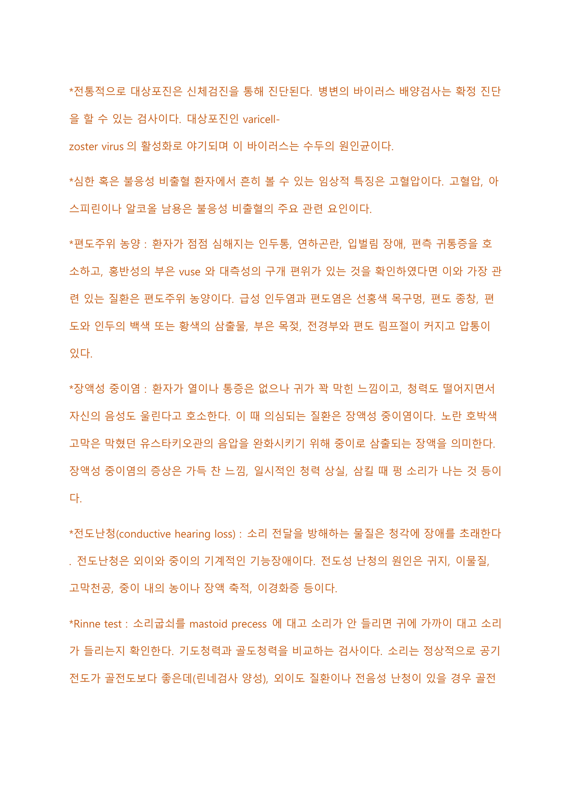

혈액·면역
백혈병·빈혈 등 조혈계 질환, 면역억제제와 장기이식, 수혈 부작용과 응고 장애(DIC), 아나필락시스·대상포진 등 면역 관련 주제 및 난청 검사를 다룬다.
1 백혈병 Leukemia
비정상적이거나 미성숙한 백혈구의 증가와 정상 백혈구 생성의 감소로 인한 비정상적 세포 증식으로, 골수·비장·림프절·간·신장·폐·피부·중추신경계 손상의 원인이 된다.
백혈병은 악화 속도에 따라 급성과 만성으로, 악성 줄기세포의 기원에 따라 골수성과 림프구성으로 나뉘어 4가지로 분류된다. 모든 혈액세포의 전구체는 줄기세포이다.
참고로 조혈 조직 내 악성 형질세포의 증식은 다발성골수종의 원인이며, Reed-Sternberg 세포의 증식은 호지킨병(림프종)의 원인이다.
| 골수성 | 림프구성 | |
|---|---|---|
| 급성 | 급성 골수성 백혈병(AML): 가장 흔한 형태. 골수계 백혈구가 분화를 멈춰 미성숙 골수모세포가 축적되어 정상 골수세포를 대체해 발생. 주로 성인에 발병하고 치료가 잘 되지 않으며 아우어 소체(Auer rod)가 특이적으로 발견된다. | 급성 림프구성 백혈병(ALL): 아동에 흔하며 소아 백혈병의 약 80%를 차지. 림프구계가 악성 세포로 변해 골수에서 증식하여 말초 혈액으로 퍼짐. 적극적인 화학요법이 필요하다. |
| 만성 | 만성 골수성 백혈병(CML): 골수계 백혈구에 생긴 악성 혈액 질환으로 90% 이상에서 필라델피아 염색체가 출현. 주로 성인에 발병하며 글리벡으로 치료한다. | 만성 림프구성 백혈병(CLL): 중년 이후 발생. 비장·간·림프절에 백혈구가 침윤하여 비대해지고 장기적 무력감이 나타나며 증상이 점차 발현. 우리나라에서는 드문 유형이다. |
2 면역억제제와 장기이식 Immunosuppressants
면역억제제에는 스테로이드, 항체, immunophilins drugs 등이 있다. 스테로이드제제는 다양한 염증성 질환, 자가면역질환, 이식편대숙주병 등에서 사용되나 감염에 취약해지고 장기 복용 시 moon face·고혈당 등 부작용이 많다. 항체 요법은 빠르고 강력한 면역억제요법이나 아나필락시스 쇼크 혹은 투여 1~2일째에 열과 오한이 동반될 수 있다.
장기이식 후 면역억제제 복용은 이식 후 생존율을 높이기 위해 필수적이다. 강력한 면역억제제로 이식 거부반응을 낮추는 도입 단계 → 이식된 조직이 장기 수여자에게 적응했을 때 유지 단계로 진행한다. 이식 후 거부반응이 일어나도 이를 전환하기 위해 복용한다. 혈중 농도를 정기적으로 측정하고 약물 용량을 조절하는 과정을 평생 지속해야 한다.
| Cyclosporine | Tacrolimus | |
|---|---|---|
| 특징 | 강력한 면역억제제. 이식 후 거부반응 예방에 사용 | cyclosporine과 유사하지만 10~100배의 효능을 가진다고 알려짐 |
| 복용 주의 | 자몽주스와 함께 복용 시 흡수에 영향을 미치므로 주의. 약물 농도를 측정하면서 복용 | 약물 농도에 따라 용량을 세밀하게 조정. 반드시 밤(취침 전)에 복용 |
| 부작용 | 장기간 복용 시 신장에 비가역적 손상 유발 가능. 기회감염이 흔히 발생 | 감염, 지방·콜레스테롤 수치 증가, 고혈압, 당뇨병 |
cyclosporine과 tacrolimus는 모두 T 세포의 신호전달과정을 억제하는 기전이다. Mycophenolic acid는 단독보다 다른 면역억제제에 추가하여 사용하며, 함께 쓰면 다른 면역억제제를 적게 써도 같은 효과를 볼 수 있어 신장 독성을 줄일 수 있다.
- 이식 환자에게 cyclosporine 치료 중 기회감염이 흔하므로 백혈구 수 4,000, 혈소판 수 75,000이 되는지 정기적으로 검사한다.
- 고혈압과 당뇨에 대한 철저한 관리가 필요하다.
- 감염 예방을 위해 간호중재 전후 손씻기를 철저히 한다.
3 빈혈 Anemia
글로빈 분자 아미노산 서열의 돌연변이로 혈색소 구조 이상이 유발되어 발생하는 유전질환. 헤모글로빈 S가 동형 접합일 때 발현하고, 이형 접합일 때는 발현되지 않으나 소변·혈액에서 합병증이 증가한다. 헤모글로빈 S를 가진 적혈구는 저산소분압 상태에서 낫 모양으로 변화한다. 낫 모양 적혈구는 대식세포에 의해 탐식·파괴되어 혈색소 파괴와 빌리루빈이 증가한다. 점착력이 증가한 낫형 적혈구가 혈관에 쌓여 미세혈관이 폐색되고 허혈성 조직손상을 유발한다.
적혈구 생산 감소에 의한 빈혈로 소구성·저혈색소성 빈혈이며 적혈구 염색 시 중심부 창백 부분이 확대되어 있다. 원인은 다음 3가지이다.
- 만성 혈액 소실로 인한 철의 소실: 보통 적혈구가 파괴되면 철 성분은 재사용되는데, 만성 혈액 손실에서는 철분 재사용이 불가능해져 혈색소 합성과 적혈구 생성에 필수인 철이 감소한다.
- 식이 섭취 부족: 육류 제한, 산모·월경 여성에서 철분 섭취 부족.
- 철분 흡수 불량: 만성 장질환에서 철분 흡수가 불량하여 발생.
철 결핍성 빈혈에서는 먼지나 흙 등 먹을 수 없는 것을 먹으려는 충동(이식증) 증상을 보인다.
두 빈혈의 공통점은 DNA 합성 문제 및 적혈구 세포의 성숙 지연으로 골수에 크고 비정상적인 적혈구 전구물질이 축적되어 발생하는 거대적아구성 빈혈이라는 점이다.
| 엽산 결핍성 빈혈 | 비타민 B12 결핍성 빈혈 | |
|---|---|---|
| 원인 | 알코올 중독으로 인한 식이 섭취 부족, 임신 중 엽산 요구량 증가, 만성 장질환으로 인한 엽산 흡수 장애 | 비타민 B12가 정상적으로 흡수되려면 장에서 위점막 분비 내인성 인자(내인자)와 결합해야 하는데, 위점막 위축이나 내인성 인자 부족 시 흡수 장애 발생 |
| 신경계 증상 | 창백·허약감·피로 등 빈혈 유사 증상을 보이나 신경계 증상은 없음 | 중추·말초신경의 변성을 초래하여 사지 저림, 이상감각, 쇠약, 평형근 이상 등 신경계 증상 발생 |
4 전신홍반루푸스 SLE
루푸스로 불리는 만성 염증질환으로 젊은 여성에게 호발한다. 흔히 발병하는 부위는 관절·신장·폐·심장·뇌·피부·소화기관이다.
초기에는 주로 피부발진부터 시작되어 폐·신장으로 침범된다. 다양한 증상을 가지며 악화와 완화 과정을 반복한다. 신체 각 기관에 영향을 주지만 임신이 가능하며, 다만 임신합병증의 위험이 높다. SLE 증상이 완화되어 6개월 이상 잘 관리되면 성공적 임신이 가능하다.
루푸스 치료 시 사용하는 Pd(prednisolone)은 태반을 통과하지 못한다.
5 혈우병 Hemophilia
선천적으로 혈액 응고인자가 결핍되어 나타나는 선천성 출혈성 질환으로 일반적으로 생후 1년 이내에 진단된다. 관절강·연조직의 출혈, 혈뇨, 출혈시간 지연, 덩이가 잘 생긴다.
| 유형 | 결핍 응고인자 |
|---|---|
| 혈우병 A | 혈액응고인자 8(VIII) |
| 혈우병 B | 혈액응고인자 9(IX) |
| 혈우병 C | 혈액응고인자 11(XI) |
근본적인 치료는 없고 출혈 예방이 중요하다. 많은 출혈이 예상되면 수혈을 시행한다. 급성 출혈 시 가장 중요한 처치는 부족 인자의 보충이며, FFP나 cryoprecipitate를 수혈한다.
6 수혈 부작용(용혈성 수혈반응) Hemolytic transfusion reaction
용혈성 수혈반응은 환자의 혈장 내 항체가 공여자 혈액의 적혈구를 공격해 파괴하는 현상으로, 일반적 원인은 혈액 부적합성이다.
보통 수혈 시작 10분 이내에 발생한다. 열, 오한, 짧은 숨, 흉통, 요통, 오심, 구토, 빈맥, 빈호흡, 저혈압 등이 나타난다.
Coomb's test: 적혈구막 표면에 결합되는 적혈구 항체 또는 보체를 확인하는 검사로 항글로불린혈청을 사용한다. 용혈성 빈혈 증상, 용혈성 수혈 부작용 증상, 신생아 용혈성 질환 의심, 산모가 Rh 음성인 경우 등에서 시행한다.
7 혈소판감소증 Thrombocytopenia
heparinization 시 혈소판감소증 징후로 점상출혈, 혈소판 150K 이하가 나타날 수 있다. 알코올 중독은 골수 억제를 초래하여 folate 부족을 야기하고 혈소판감소증 발생에 기여한다.
일반적으로 출혈 징후가 있고 PLT 50K 미만으로 떨어질 때 수혈을 실시한다.
8 파종성혈관내응고 DIC
파종성혈관내응고증은 혈전·출혈성 질환으로 다른 질환의 이차적 합병증으로 보통 발생한다. 어떤 질병으로 혈액 내로 조직인자 또는 트롬보플라스틴 물질이 분비되고 광범위한 내피세포 손상으로 응고 과정이 유발된다. 전신 미세혈관에 혈전이 형성되어 조직 저산소증과 미세 경색을 일으키고, 광범위한 혈전증으로 응고과정에서 혈소판과 응고인자가 소모되며 이차적 섬유소 용해 활성화가 일어나 출혈이 발생한다.
명확한 진단 기준은 없으며 임상적 소견을 근거로 한다. PLT, fibrinogen, antithrombin, plasmin, 혈액응고인자 측정과 PT·aPTT의 응고검사를 시행한다. 또한 섬유소분해산물(FDP)과 D-dimer의 증가로 DIC를 의심할 수 있다.
- FDP(fibrin degradation products): 섬유소용해산물로 섬유소용해능을 반영한다.
- 다발성 장기부전을 나타내는 결과: 총 빌리루빈 상승(간기능 저하), 혈청 Cr 상승(신기능 저하), 혈소판 감소(골수기능 저하).
참고 정상범위: INR 0.6~1.7, PT 11.4~15.4 sec, aPTT 25~35 sec, PLT 150K~450K.
- FFP는 혈액응고인자 수혈로, 응고인자 2·5·7·9·10·11이 결핍된 경우 치료에 효과적이다.
- INR이 상승한 환자의 초기 치료는 해독제인 vit K 투여이며, 출혈 진행 여부를 아직 알 수 없으므로 수혈 필요성은 판단할 수 없다.
DIC 환자에서 의식저하가 있을 때는 뇌저산소증이나 뇌내출혈을 의미하므로 즉각적 관리가 필요하다. 외상 환자에게 생명을 위협하는 합병증의 초기 징후는 산증·저체온·폐부종이며, 치명적 손상 시 조직관류저하가 동반된다.
9 아나필락시스 Anaphylaxis
알레르기원이 염증성 반응을 유발할 때 비만세포에서 히스타민을 분비하게 된다.
아나필락시스 반응이 전신으로 나타나는 경우(천명음, 짧은 호흡, 두드러기, 저혈압 등) epinephrine 0.5 mg을 IM(근육주사)으로 투여한다.
약물의 종류에 상관없이 중독 환자에게 제공되는 초기 중재의 목적은 기도 확보와 적절한 호흡 유지이다. 치료는 기도 유지·호흡 보조·순환 보조·신속한 평가로 시작한다.
10 면역·혈액형 기초 Immunity & Blood type
- 항원에 처음 노출 시 IgM이 먼저 반응하고 뒤이어 IgG가 반응하며, 재감염 시에는 IgG가 먼저 반응한다.
- HLA(인체조직적합항원)는 자기 자신과 다른 사람을 구별하는 면역학적 표지이며 자가면역질환과 가장 관련이 많다.
- 장기이식 전 ABO 혈액형과 HLA 적합성 일치 검사가 필요하다(Rh는 무관).
- 노인에서 만성질환에 의한 염증성 사이토카인의 증가로 조혈기능 저하가 유발될 수 있다.
AB형은 세포 표면에 A와 B형 항원을 가지고 있고 항체는 없다. 모든 혈액형으로부터 수혈을 받을 수 있으나(만능 수혜자) AB형에게만 공여할 수 있다.
11 대상포진 Herpes zoster
대상포진은 varicella-zoster virus의 활성화로 야기되며, 이 바이러스는 수두의 원인균이다.
활성화된 대상포진은 피부분절(dermatome)을 따라 발생하지만 중간선을 가로지르지 않는 특징적인 발포성 병변(vesicular lesions)을 보인다. 타는 듯한, 욱신욱신 쑤시는, 칼에 베이는 듯한 통증, 때로는 심한 가려움증의 증상을 보인다. 흉부 피부분절이 가장 흔하게 침범되는 부위이고 그 다음이 허리 부분이다.
전통적으로 신체검진을 통해 진단되며, 병변의 바이러스 배양검사로 확정 진단을 할 수 있다.
12 난청과 청력 검사 Hearing loss / Rinne·Weber test
전도난청(conductive hearing loss)은 외이와 중이의 기계적인 기능장애로, 소리 전달을 방해하는 물질이 청각에 장애를 초래한다. 원인은 귀지, 이물질, 고막천공, 중이 내의 농이나 장액 축적, 이경화증 등이다.
| Rinne test | Weber test | |
|---|---|---|
| 방법 | 소리굽쇠를 mastoid process(유양돌기)에 대고 소리가 안 들리면 귀 가까이 대고 들리는지 확인. 기도청력과 골도청력을 비교 | 소리굽쇠를 이마 한가운데에 대고 양쪽 귀 소리를 비교 |
| 정상 | 공기전도가 골전도보다 좋음(린네검사 양성) | 양쪽이 동일하게 들림 |
| 해석 | 린네검사 양성 → 정상 또는 감각신경성 난청 / 린네검사 음성 → 전도성 난청 | 병변 쪽으로 소리가 더 잘 안 들리면 감각신경성 난청 / 병변 쪽으로 소리가 더 잘 들리면 전도성 난청 |
- Romberg test: 내이에 있는 전정기관의 평형 유지 능력을 사정하는 검사. 두 다리로 서서 양팔을 양쪽 옆에 두고 눈을 감은 자세를 약 20초간 유지시킨다. 전정기능이 소실된 경우 흔들거림·넘어짐·균형을 위한 보폭 넓힘을 보인다.
- 이명 사정: 이명의 진단에서 중요한 것은 뇌질환, 외상, 소음 노출, 이독성 약물의 사용, 심혈관 질환 여부 등 이명과 관련된 병력을 조사하는 것이다.
